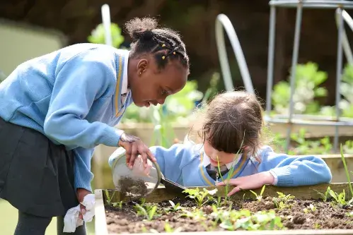

Extended Curriculum & Enrichment

Sports & Fitness
Football, netball, athletics, gymnastics, and swimming clubs

Performing Arts
Drama, choir, school productions, and music lessons

STEM Clubs
Coding, robotics, science experiments, and maths challenges

Creative Arts
Art club, craft activities, and creative writing workshops